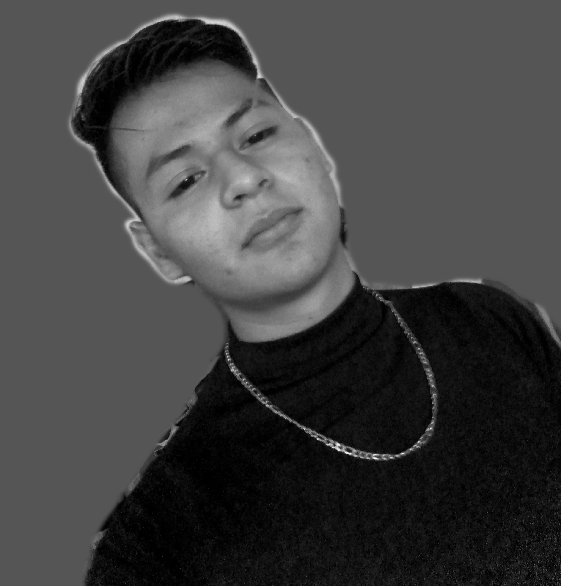

Mi nombre es Oscar Luis Islas tengo
19 años, nací el 28 de septiembre del 2003, desde muy pequeño
presenté habilidades para el deporte, la música, y el arte principalmente, y actualmente en 2022 cuento
con un logo personal y un nombre artístico, para identificarme entre otros artistas, donde también me
ubico trabajando por cuenta propia diseñando para personas que soliciten algún dibujo o diseño digital
multipropósitos, a lo largo de mi vida, llevo conmigo la diciplina del arte marcial taekwondo, donde
tengo entrenando 8 años, donde logré participar quedando en 4 lugar en un selectivo a nivel nacional,
también peleando a favor de Estados Unidos en un evento de peleas de equipos de 5 personas, llamado TK5,
quedando en 1er lugar.
Actualmente me encuentro estudiando la carrera de Desarrollo de Software
Multiplataforma, donde me ha
costado mucho trabajo estar a la altura para ser el mejor.